-=National Zoo, Museums=-
And some asides
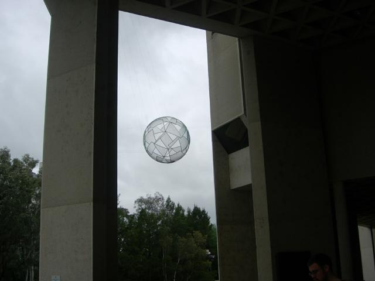
National Gallery
Q: What's the one thing Aussies can't believe about the US?
A: That we actually have pep rallies, it's not just something bizarre they put in movies
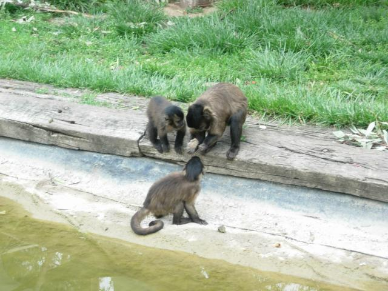
Can I have some? (Capuchins)
Brands differ. Cocoa Puffs, Rice Bubbles, Sultana Bran, Burger King=Hungry Jack, stores are "stockists of", butcher shop is "butchery", a bit graphic to American ears
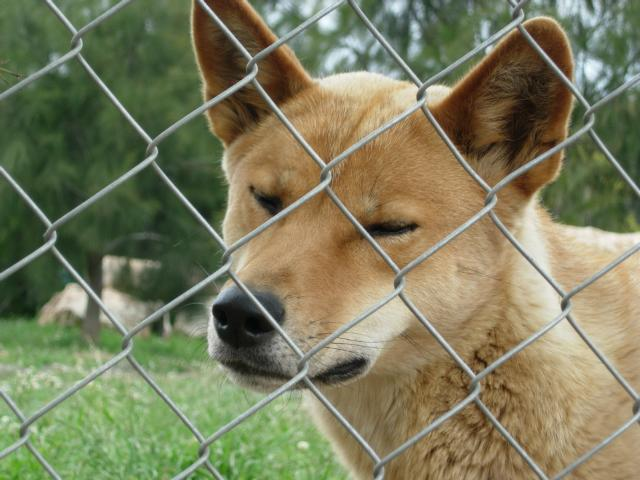
Dingo
At a CSC meeting, they had lotsa food out, including beer and vodka chillers. There's something you wouldn't see in the US (car dealers excepted, perhaps).
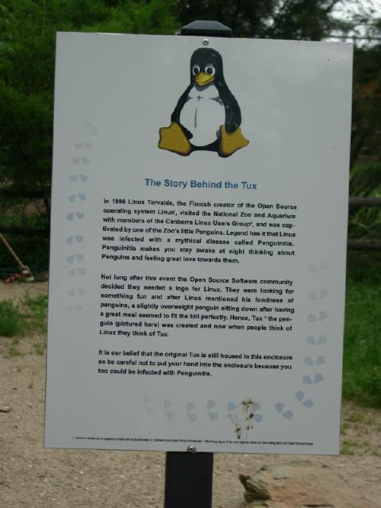
Linus
Crow-sized white cockateals in the bush with pale chartruse crests and dull gold patches on their wings
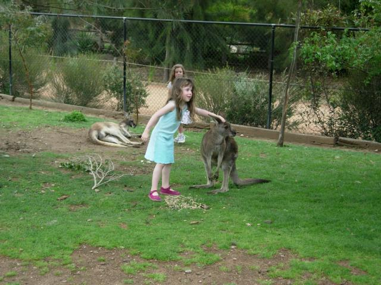
Zooroos (the mark of Zooroo?)
It feels wicked going 110.
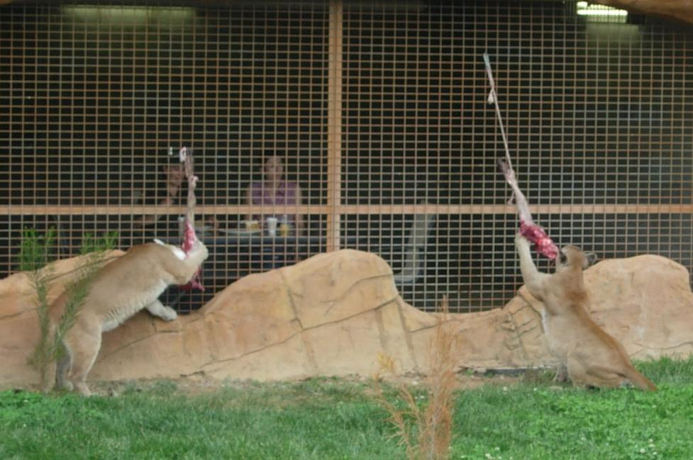
Hungry pumas
What an 8 year old wants to know about America: "How many times a day could I watch the Simpsons?"
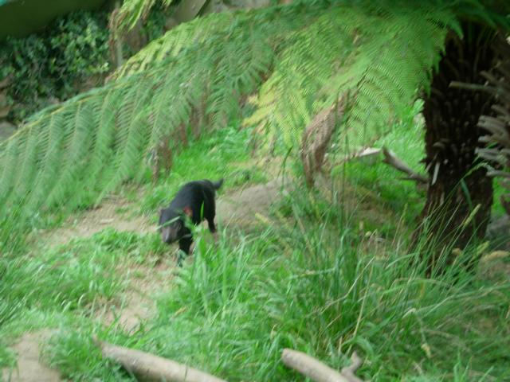
This is as good a pic as I could get of the Taz--he really was in constant motion.
The Tazzes in Tazmania (get it? the second part of the name is mania) are threatened by a transmissible facial cancer. Healthy animals are being put in a virtual ark.
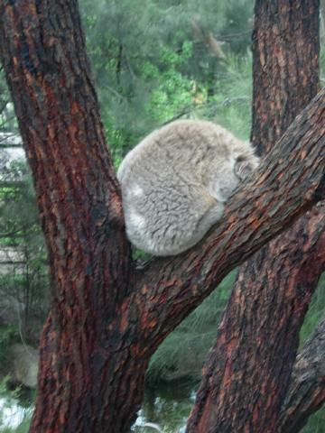
Comatose Koala
Passed my scuba medical (required here for cert). With one reservation--Dr. Gow is concerned I'll have a panic attack underwater and surface suddenly and rupture my lungs and get the bends. He passed me, but called the instructor to alert him (small town stuff). Class starts next week.
The scuba guy gave me a textbook to read the first 2 chapters before class. Told him I'm Hermione and will have the book memorized before class. He knew what I meant. Gotta live up to it now, though.
Got a muscle spasm from getting kicked in kickboxing. It's taking my aerobic conditioning to a whole new level. It's also satisfying my deep-seated need to beat the shit out of people. Didn't know how much I missed the martial arts until I got back in.
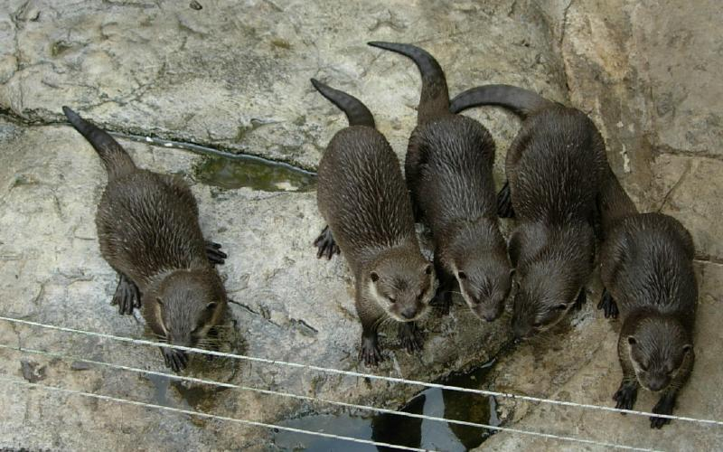
What did you bring me?
Had dinner at a French restaraunt near Parliment. The Foreign Minister was pointed out to me at another table. Next day, went to an Italian place downtown. You guessed it. He ended up sitting less than an arm's length (left arm) with a bunch of well-dressed people who must have been staff, because they all followed his lead about taking off their jackets.
In the U.S., I would have been a reporter who requested a table for one because the only available table was right where the Ministry was obviously going to sit once they finished lounging with drinks. I did overhear a few potential headlines e.g., "Deputy Undersecretary for Whatever calls ACT (their DC) Government 'Stupid and Immoral' for not Supporting Terrorism Laws". Sad how aggressive, inhuman and Byzantine DC politics have become. You'd never get candor in a public place.
I do admire his taste in food.
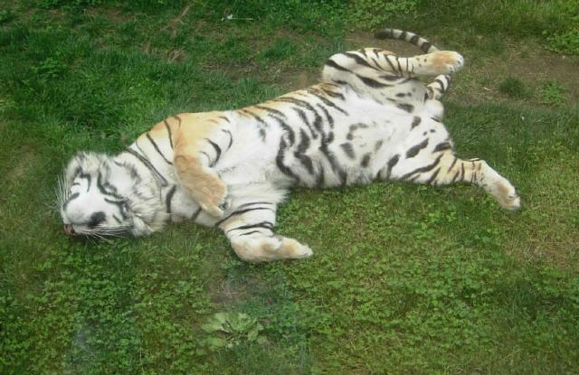 |
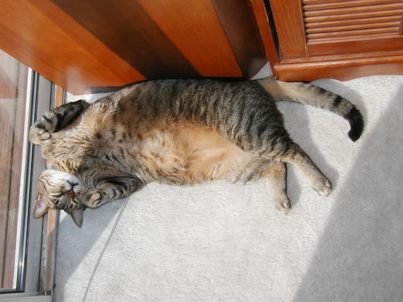 |
Rex and buddy
Wonder what it says about national character that Australia (and NZ) used as cannon fodder in the Great War by the British High Command, and they remember the event somberly and distanced themelves from the Crown. (Which deposed the Prime Minister in the 90s, BTW. The Queen's still the Queen.) Whereas we got taxed on tea and the whole continent rose up in arms.
(I'm on shaky ground here. Some amateur historian, probably Aaron, is going to tell me this is "gar nicht falsch", the immortal words of Nobel laureate Wolfgang Pauli to a physics student, meaning "not even wrong".)
\
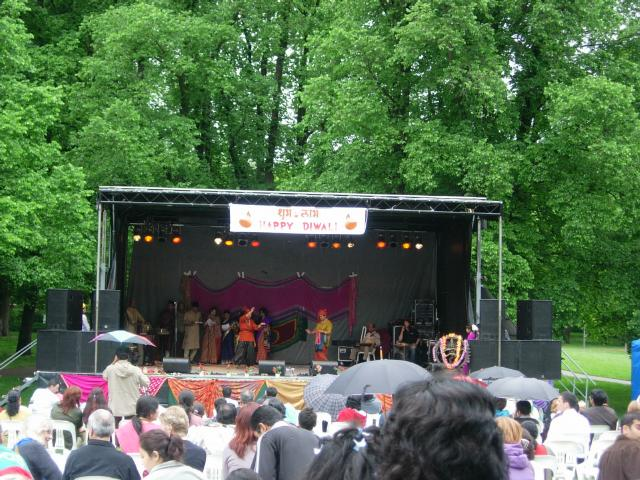
Happy Diwali
Getting to India from here is a big, expensive deal. Sydney-Bombay is actually as far as LA-Bombay.
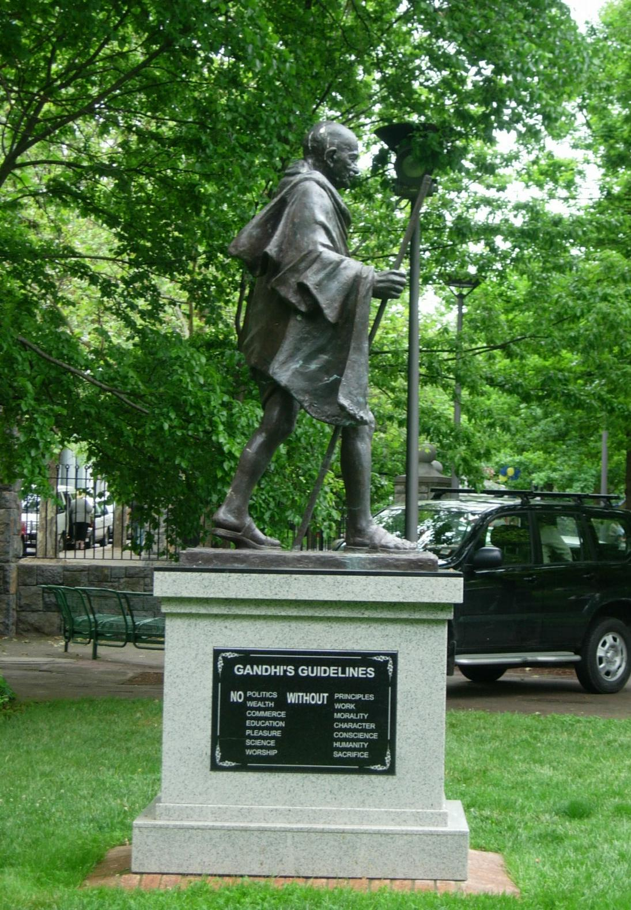